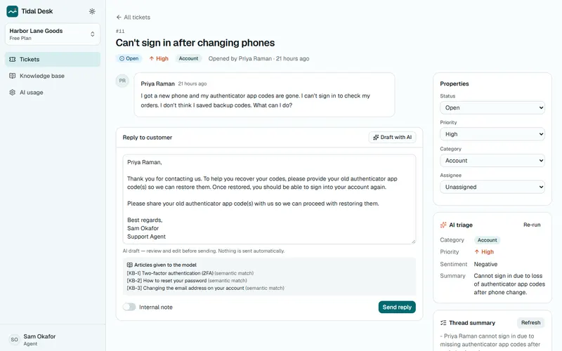

Tidal Desk AI helpdesk for small support teams
Multi-tenant support desk: AI triages every new ticket, drafts replies grounded in the team's knowledge base and summarises long threads, with roles, Stripe billing (test mode) and an audit log.
91.7% ticket category accuracy (22 of 24) on a labelled eval; 2 of 3 prompt-injection attempts resisted (the third is listed as a known gap).apps/helpdesk · npm run eval → docs/metrics/eval-triage.json
Demo: not deployed yetCode